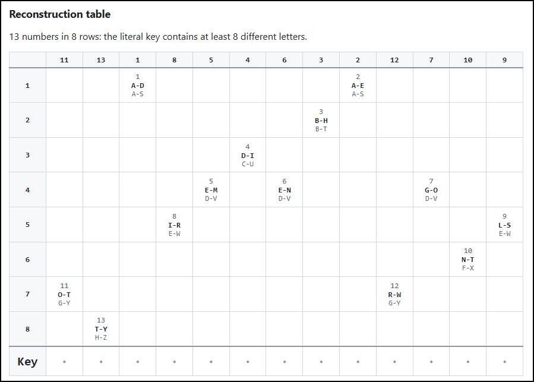
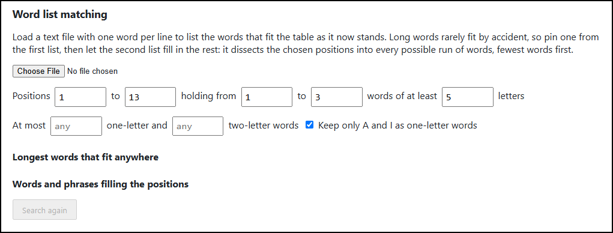
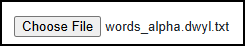
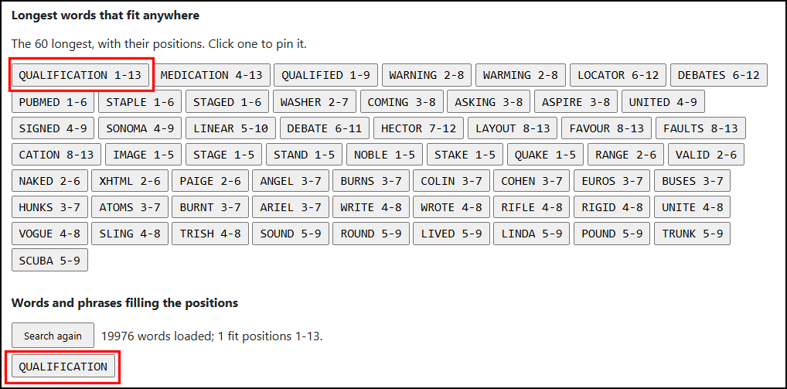
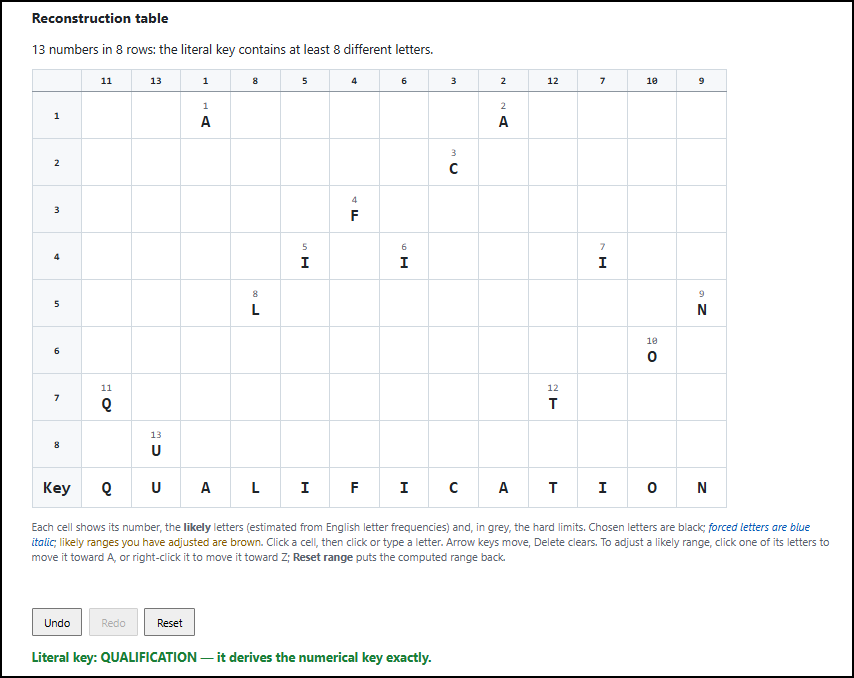

Matching a one-word literal key
In this example we reconstruct the literal key behind the numerical key “11-13-1-8-5-4-6-3-2-12-7-10-9”. As a first step, we will assume the literal key is a single English word. Here is our plan:
Begin by typing or pasting the numerical key into the “Numerical key” text field:
Click the “Build table” button to initialize the tool with your numerical key. You can see that the reconstruction table has been set up for you:

Next, scroll past the reconstruction table to the “Word list matching” section:

Search for a one-word solution to our numerical key. First, select a word list file (the guide provides links to English word lists). The word list selected here is Google’s 20,000 most common words, against about 370,000 in the dwyl list:

(Loading a new word list file, or modifying any field, automatically restarts the search.)
Set the matching filter:
After a moment, you can see the results:

Note: This screenshot shows proper names, brand names and abbreviations, such as PUBMED, SONOMA, XHTML, COHEN. Frequency lists built from web text include them. You should be aware of such noise when using public word lists.
This list helps most when the literal key has several words: even when no phrase fills the whole key, a long word from this list may be one of its words.
Here QUALIFICATION is the only word that fills all 13 of the positions.
Note: QUALIFIED 1-9 and MEDICATION 4-13 both fit the key but are wrong. Fitting part of the key doesn’t make a word correct.
In this section, the matcher found exactly one word: QUALIFICATION. Clicking on that word in the results sets up the reconstruction table with the solution:

The reconstruction table states clearly “Literal key: QUALIFICATION — it derives the numerical key exactly”.
In this simple example, after providing a smaller word list, we specified in the matching filter that we’re looking for a single word that matches the numerical key. If we had failed to find the key, we would either: